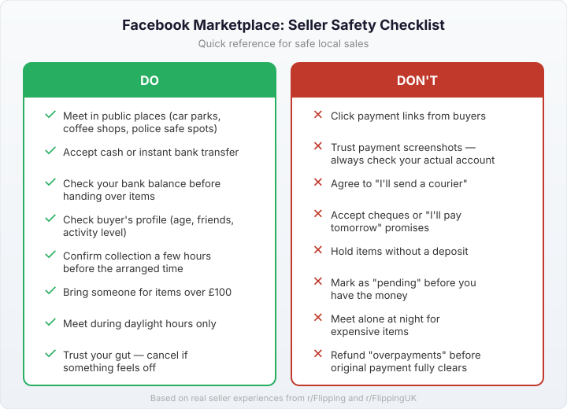
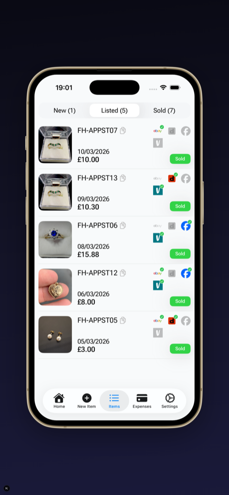

Last updated: 17 April 2026
How to Sell on Facebook Marketplace UK: Complete 2026 Guide
Facebook Marketplace is one of the easiest places to sell in the UK. No account setup, no listing fees, no seller fees on local pickup sales. You can list something in under 2 minutes and buyers in your area see it immediately.
But if you’ve actually spent time selling on Marketplace, you know it comes with its own frustrations. Time wasters who message “is this still available?” and never reply. Buyers who arrange collection and don’t show up. Scammers sending fake payment links. These aren’t edge cases — they’re what every regular Marketplace seller deals with.
This guide covers all of it — how to list, what sells well, how to price, and how to deal with the annoying parts. A lot of what’s here comes from real seller experiences shared on communities like r/Flipping and r/FlippingUK, not just theory.
How to list an item on Facebook Marketplace
Open Facebook
(app or desktop) and tap the Marketplace icon (the shopfront icon in the bottom menu on mobile)
Tap “Sell”
or the “+” button, then choose “Item for Sale”
Add photos
take clear, well-lit photos using natural light. The first photo is what people see when scrolling, so make it count. Use all 10 photo slots if you can — front, back, sides, any damage, labels, and a photo showing scale
Write a title
include the brand, item name, size, and condition. “Nike Air Max 90 Size 9 Mens White — Good Condition” is much better than “trainers for sale”
Set your price
check what similar items have sold for on Marketplace and eBay sold listings recently. Price 10-15% above what you actually want, because almost everyone on Marketplace negotiates
Choose a category
this helps Facebook show your item to the right people
Set your location
this determines who sees your listing. You can set a custom location different from your home address
Write a description
mention condition, measurements, reason for selling, and whether you’ll deliver or it’s collection only. Honest descriptions reduce time-wasting messages
Publish
your listing goes live immediately to people browsing in your area
Facebook Marketplace fees in the UK
For local pickup sales, Facebook charges nothing. No listing fees, no selling fees, no commission. Payment happens off-platform — usually cash on collection or bank transfer.
If you use Facebook’s shipping checkout option (where available in the UK), a 2% selling fee applies to the total transaction amount (item price + shipping). That’s significantly lower than eBay business seller fees (~13%). See Meta’s official fee page for the latest details, and Facebook’s Help Centre on delivery costs for shipping specifics.
In practice, the vast majority of Facebook Marketplace sales in the UK are local pickup. That’s what makes it different from eBay and Vinted — no postage costs, no fees, and cash in hand on the day.
What sells well on Facebook Marketplace UK
Marketplace is strongest for items where local pickup makes sense:
- Furniture — sofas, tables, wardrobes, desks. Anything heavy or bulky that’s a nightmare to post
- Baby and kids’ items — pushchairs, cots, highchairs, toys. Parents are always looking for deals locally
- Electronics — TVs, monitors, game consoles, phones. Buyers want to test before paying
- Garden equipment — lawnmowers, tools, outdoor furniture
- Exercise equipment — treadmills, weight benches, dumbbells. Heavy items that cost £20+ to post
- Home appliances — washing machines, microwaves, hoovers
- Cars and vehicles — Facebook has a dedicated vehicles section with filters for make, mileage, and year
Furniture deserves special mention. One seller on r/Flipping shared how they made $9,000 in a single month picking up free furniture that people were giving away on Marketplace, cleaning it up or doing minor repairs, and relisting. You don’t need that kind of volume, but it shows what’s possible when you focus on heavy items that are free to collect but people will pay good money for.
Items that sell better on eBay or Vinted: small, postable items like clothing, books, and collectibles — because you reach a national audience rather than just local buyers. Many resellers use Marketplace alongside other platforms. If you’re wondering what items to start with, our guide covers what actually sells across all platforms.
How to get more views on Facebook Marketplace
Facebook doesn’t publish exactly how Marketplace ranking works, but sellers who’ve done hundreds of deals have noticed consistent patterns:
Fresh listings get priority. The first 24-48 hours after posting get the most views. If something hasn’t sold after a week, delete it and relist — the fresh listing gets another boost in visibility.
More photos = more engagement. Listings with all 10 photo slots filled perform better than those with 2-3 blurry pictures. Facebook seems to reward listings that keep people engaged longer.
Price competitively. If your item is priced well above similar listings, Marketplace appears to show it less. Check what comparable items are listed at and price accordingly.
Respond to messages fast. Facebook shows a “usually responds within...” badge on your profile. Fast response times build trust with buyers and seem to help your listings appear higher.
Share to local groups. After listing on Marketplace, share it to buy-and-sell Facebook groups in your area. This extends reach beyond just Marketplace search and puts your item in front of people who are actively browsing for deals.
Post at peak times. Evenings (7-9pm) and weekends get more browsing traffic. Listing during these times means more eyeballs in that critical first window.
Tips for selling faster
- Price with negotiation room. Almost everyone on Marketplace will try to knock the price down. Set your price 10-15% above what you actually want, so you can “agree” to a discount and both sides feel good about it
- Respond quickly. The first few hours after listing get the most interest. If someone messages you and you don’t reply for a day, they’ve probably bought from someone else
- Be flexible on collection times. The easier you make it for buyers to collect, the faster it sells. “I’m free any evening this week” beats “Tuesday between 2 and 3pm only”
- Keep it listed until money is in your hand. Don’t mark items as “pending” just because someone said “I’ll take it.” Too many buyers ghost after that message. Keep talking to other interested buyers until someone actually pays
- Always have a backup buyer. A seller who shared their experience after 100+ deals on r/Flipping noted that the first person to say “I’m interested” is often not the person who actually collects. Having a second or third buyer lined up means you’re not starting from scratch when someone doesn’t show
Dealing with time wasters and no-shows
This is the single biggest complaint about selling on Facebook Marketplace. One seller put it bluntly on r/reselling: “Facebook has got to be the worst platform to sell on... An absolutely incessant amount of ‘hey is this still available?’ messages all for no one to respond after.” Another thread — “I finally had enough of facebook marketplace time wasters” — had hundreds of sellers sharing the same frustration.
The “is this still available?” message is often generated automatically by Facebook when someone taps the button on your listing. Many people tap it out of curiosity with no real intention to buy. Don’t take it personally.
What actually helps:
Filter fast. Reply to “is this still available?” with something that moves toward a sale: “Yes it is. When would you like to collect?” People who aren’t serious won’t reply. People who are serious will give you a time.
Never hold without a deposit. “Can you hold it until Saturday?” usually means they found something cheaper by Saturday. If someone wants you to hold an item, ask for a non-refundable deposit via bank transfer. Most time wasters disappear at this point, and genuine buyers don’t mind.
Confirm before collection. Send a message a few hours before the arranged time: “Still good for 3pm?” If they go quiet, you know they’re not coming and you haven’t wasted your afternoon.
Expect it. A post about a buyer not showing up on r/Flipping had nearly 700 upvotes and hundreds of sellers sharing the exact same experience. No-shows aren’t a reflection of your listing — they’re part of the platform. Build it into your expectations rather than getting frustrated each time.
Facebook Marketplace scams to watch out for
Marketplace generally has fewer scam issues than eBay (no “item not as described” returns, no chargebacks on cash payments). But the scams that do exist can catch you off guard if you’re not aware of them.
Fake payment confirmation
A buyer sends you a screenshot of a “payment” or a fake email saying money has been sent to your account. Always check your actual bank account or PayPal balance — never trust a screenshot. This is the most common scam on the platform and the easiest to avoid.
Stripe or payment link phishing
One seller on r/FlippingUK reported a buyer sending a fake Stripe payment link designed to harvest bank details. Never click payment links sent by buyers. If you’re accepting a bank transfer, give them your sort code and account number — that’s all they need. They don’t need to send you a link.
“I’ll send a courier” scam
The buyer claims they can’t collect in person and wants to send a courier or use a third-party delivery service. They then send a fake payment to “cover” the courier cost, or ask for your details through a phishing link. For local sales, stick to in-person collection. If they genuinely can’t collect, they can ask a friend or family member.
Overpayment scam
They “accidentally” pay more than the asking price and ask you to refund the difference. The original payment then bounces or gets reversed. Never refund anything until money has fully cleared in your account — which for bank transfers usually means at least a few hours, and for cheques can mean days.
Taking payment off-platform
If you’re using Facebook’s checkout for shipped items, a buyer might suggest completing the transaction outside of Facebook “to save on fees.” This removes any protection for both parties. A thread on r/Flipping detailed exactly how a buyer tried this approach.
The general rule: if someone makes the transaction more complicated than “I’ll come collect it and pay you cash” or “I’ll do a bank transfer and you post it” — be suspicious. Legitimate buyers don’t need complicated payment workarounds.

Safety tips for meeting buyers
Most Facebook Marketplace transactions go smoothly. But since you’re meeting strangers in person, take basic precautions.
Meet in a public place for portable items — supermarket car park, petrol station forecourt, outside a coffee shop. Some police stations have designated safe trading spots, usually in their car park under CCTV. Search “[your area] police safe trading spot” to check — many forces across England and Wales have set these up specifically for online marketplace meetups.
Daytime only. Don’t arrange evening collections at your home with someone you’ve never met. If they can only come at 9pm, suggest the next morning instead. It’s not worth the risk for any amount of money.
Bring someone with you for expensive items (£100+). If you’re selling alone, let someone know where you’re going and who you’re meeting. Share the buyer’s Facebook profile with a friend before you leave.
Cash or instant bank transfer only. Never accept cheques, PayPal “friends and family” (which has no seller protection), or promises to pay later. For bank transfers, Faster Payments typically arrive within minutes — wait until it shows in your account before handing anything over. Don’t accept “I’ve sent it, it’ll arrive tomorrow” — either it’s there or it’s not.
Check the buyer’s profile. A brand new Facebook account with no profile photo, no friends, and no activity is a red flag. It doesn’t automatically mean scammer, but be more cautious with new accounts, especially for expensive items.
Never click payment links from buyers. If someone offers to pay through a link they send you, or asks for your card details, or wants to use a payment service you’ve never heard of — don’t. These are almost always scam attempts. Legitimate buyers pay cash or do a straightforward bank transfer.
Trust your gut. If the messages feel off, if the buyer is pushy about an unusual payment method, or if something just doesn’t seem right — cancel. You can always relist. No sale is worth your safety or your bank details.
Facebook Marketplace vs eBay vs Vinted
| FB Marketplace | eBay UK | Vinted | |
|---|---|---|---|
| Seller fees | None (local) / 2% (shipped) | None (private) / ~13% (business) | None |
| Audience | Local only | National (30M+ UK buyers) | National (fashion-focused) |
| Best for | Furniture, electronics, heavy items | Everything (especially collectibles) | Clothing, shoes, accessories |
| Delivery | Collection (mostly) | Post (mostly) | Post (mostly) |
| Buyer protection | Limited (local sales) | Full Money Back Guarantee | Buyer Protection fee |
| Payment | Cash / bank transfer | eBay Managed Payments | In-app payment |
| Scam risk | Fake payments, no-shows | “Not as described” returns | Lower (in-app payments) |
Most successful resellers use multiple platforms. Heavy or bulky items go on Facebook Marketplace. Clothing goes on Vinted and eBay. Electronics and collectibles go on eBay where they reach the widest audience. The key is knowing which platform suits which item — and tracking where things actually sell so you know where to focus.

Common mistakes to avoid
- Vague titles. “Selling this” or “collection only” as the title — nobody will click on it. Include brand, item, size, condition. Marketplace search works like Google — if your title doesn’t have the right words, nobody finds it
- Dark or blurry photos. Natural light, clean background, multiple angles. Takes 30 extra seconds and makes a huge difference. If you’re selling furniture, include a photo with something for scale
- Ignoring lowball offers. Counter-offer instead of ignoring. Some of these people end up buying at a reasonable price. A “no thanks, I can do £X” takes 5 seconds to type
- Overpricing. Marketplace buyers compare prices instantly. If your item is 30% more than identical listings nearby, it won’t sell. Check what others are charging before you list
- Marking as “pending” too early. Don’t mark sold or pending until you have the money. “I’ll come Saturday” means nothing until Saturday actually happens
- Not relisting stale items. If an item has been up for 2 weeks with no interest, delete and relist it with better photos or a lower price. Old listings get buried
Frequently asked questions
Does Facebook Marketplace charge fees in the UK?
No fees for local pickup sales — you keep 100%. No listing fees either. If you use Facebook’s shipping checkout option, a 2% selling fee applies to the total transaction. See Meta’s official fees page for current details.
How do I sell on Facebook Marketplace?
Open Facebook, tap Marketplace, tap Sell, add photos, write a title and description, set your price and location, then publish. Takes about 2 minutes. Buyers message you through Messenger.
What sells best on Facebook Marketplace UK?
Furniture, baby items, electronics, garden equipment, and anything heavy or bulky that’s expensive to post. Local collection means zero postage costs, which is Marketplace’s biggest advantage over eBay and Vinted.
Is Facebook Marketplace safe?
Generally yes, but take precautions. Meet in public places during daytime. Accept cash or instant bank transfer only. Never click payment links from buyers. Check the buyer’s Facebook profile before meeting. See our scams section above for specific scams to watch out for.
How do I deal with time wasters?
Reply to “is this still available?” with “Yes — when can you collect?” to filter out casual browsers. Never hold items without a deposit. Always have backup buyers ready. And confirm collection arrangements a few hours before — if they go quiet, they’re not coming.
How does the Facebook Marketplace algorithm work?
Facebook doesn’t publish the details, but fresh listings get the most views (first 24-48 hours). Relisting after a week gives a fresh boost. Using all photo slots, pricing competitively, and responding quickly to messages all seem to improve visibility. Sharing to local buy/sell groups also helps.
Can I sell on Facebook Marketplace without shipping?
Yes — most UK Marketplace sales are local collection. You list the item, agree a time and place through Messenger, and the buyer comes to collect and pays you in cash or bank transfer. No packaging, no postage, no shipping labels needed.
What’s the best time to post on Facebook Marketplace?
Evenings (7-9pm) and weekends tend to get the most browsing traffic. Listing during peak hours means more people see your item in that important first window when visibility is highest.
About the author
I’m Oleksandr, the developer behind FlipperHelper. My wife resells at car boot sales, charity shops, and online — Facebook Marketplace included. I built the app to help her (and other UK resellers) track what they buy, where they list it, and whether they actually made a profit after all the fees and costs. The tips in this guide are a mix of her real selling experience and what the reselling community shares openly on Reddit.
Track Marketplace sales alongside eBay and Vinted
FlipperHelper tracks items across 16 platforms including Facebook Marketplace, eBay, and Vinted. Log your purchase, list on multiple platforms, and record the sale wherever it happens. See your profit per item, per platform, per month — so you know where your time is actually paying off.
Download Free on the App StoreGet it Free on Google Play